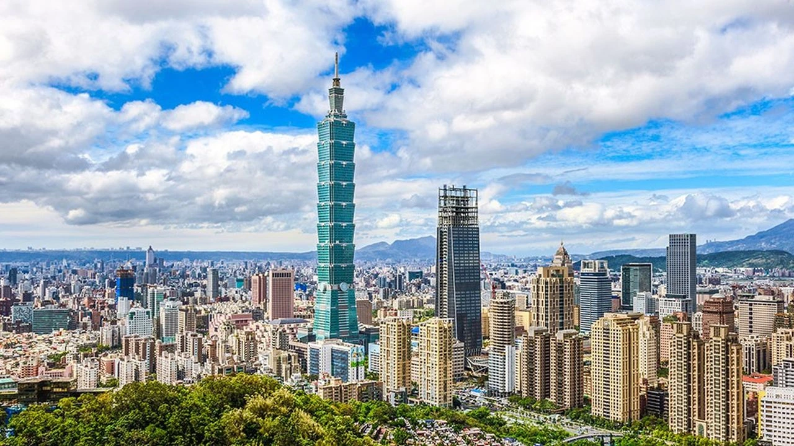

Slovakia is a country with a rich historical and cultural heritage, offering an authentic experience to international students. Its central location in Europe makes it easy to explore neighboring countries. Slovakia attracts with its preserved natural landscapes, medieval castles, and varied gastronomy.
I had the opportunity to go to Slovakia for 3 months as part of a professional assignment. I work at Orange Wholesale, within the OINIS entity (Orange International Networks Infrastructures and Services), in the TCI team (Telco Cloud Infrastructure). Our team is responsible for designing and developing SDNPOPv2, a technology aimed at virtualizing network infrastructures. During my stay, I joined the Build & Run team of OINIS at Orange Business in Slovakia, where I discovered the operational aspect of SDNPOPv2: the deployment and maintenance of infrastructures.
Working with the Bratislava-based team gave me the chance to experience Slovak culture firsthand, sample local cuisine, and discover the country's stunning landscapes.
Bratislava enjoys a strategic position in the heart of Central Europe, close to iconic cities such as Vienna (Austria), Budapest (Hungary), Prague (Czech Republic), and Krakow (Poland). This location allowed me to travel easily and discover the cultural diversity of the region.
This experience in Slovakia was extremely enriching, both professionally and personally. I developed new skills, improved my English, and expanded my network by meeting people from various backgrounds. These exchanges and discoveries strengthened my open-mindedness and adaptability.
I still have two years of studies left, and I am currently considering the possibility of going on an Erasmus exchange during my third year of studies to discover new countries and cultures, particularly in Asia, such as China or Taiwan. If I take this opportunity, it will be another step in my personal and professional development, allowing me to broaden my horizons even further.
